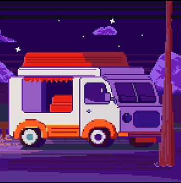

Фритрек и нулевой спринт: Подготовка к работе

</HTML>
Это было самое начало пути. На этом этапе важно было проникнуться основами и настроиться на учёбу. И, возможно, подумать, как новые знания могут повлиять на ваше будущее.
Было предвкушение чего-то нового и интересного. Также я сравнивала способ обучения предлагаемый в ЯП с другими пройденными мной курсами и учебой в университете.